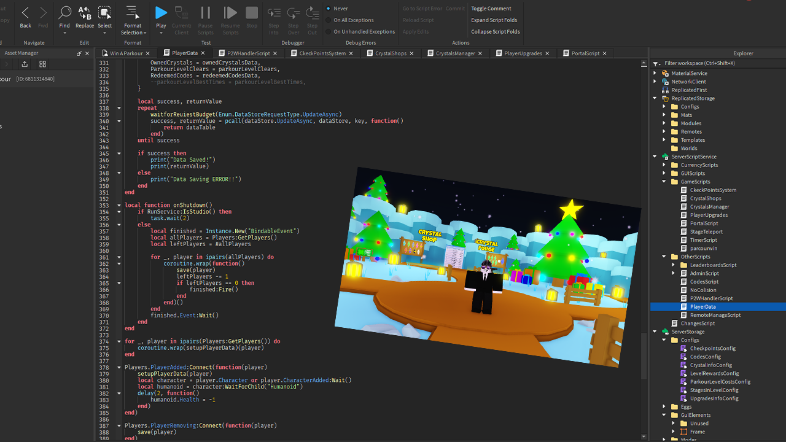
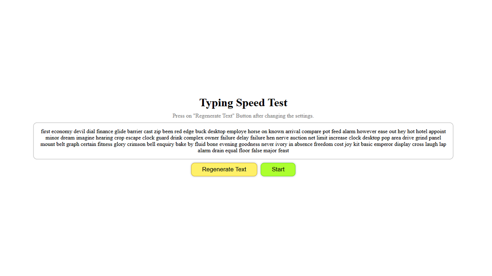
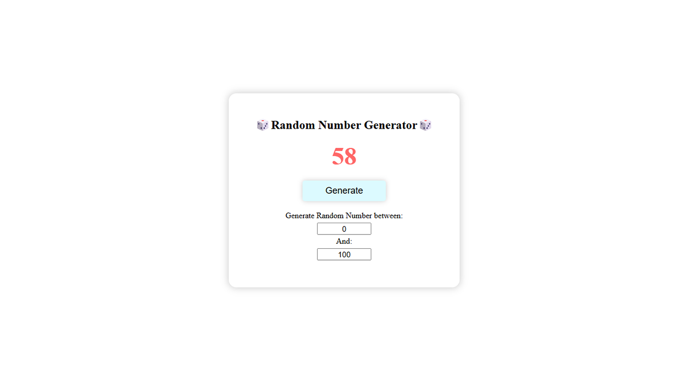
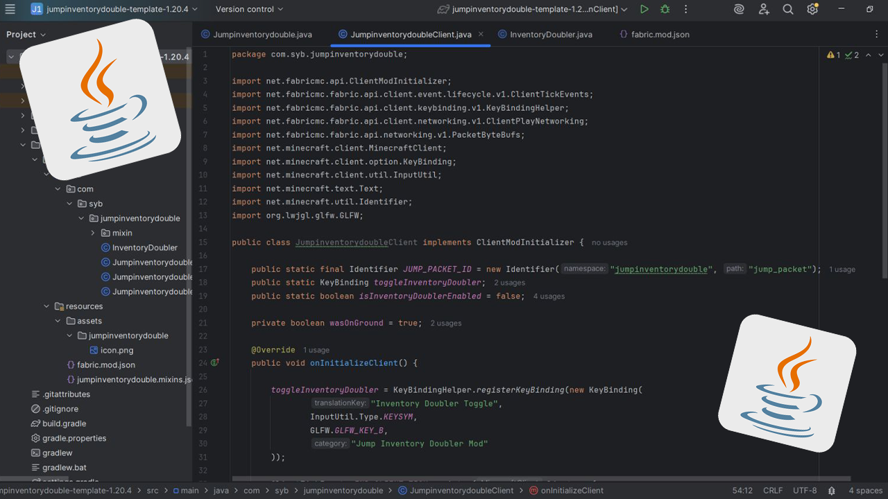
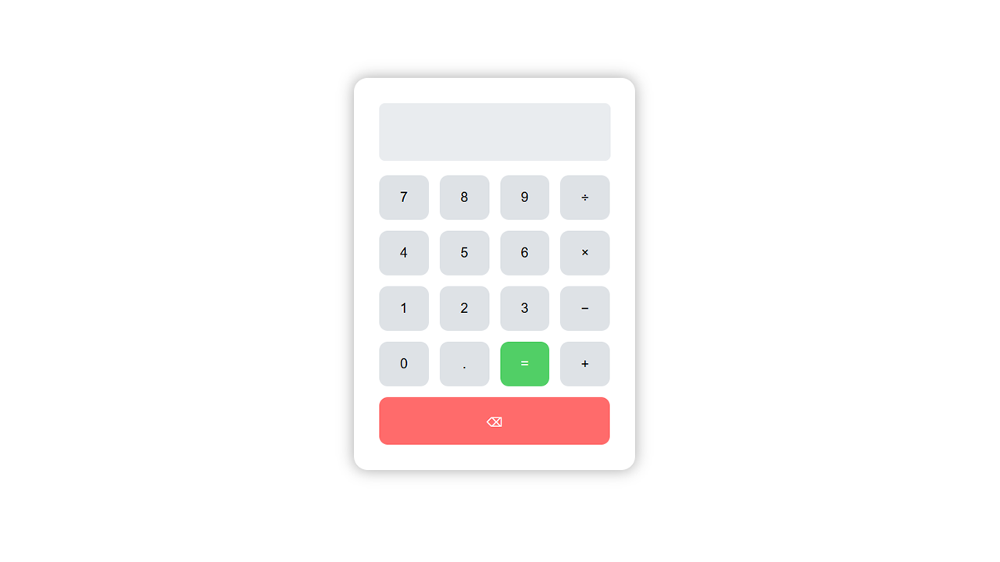
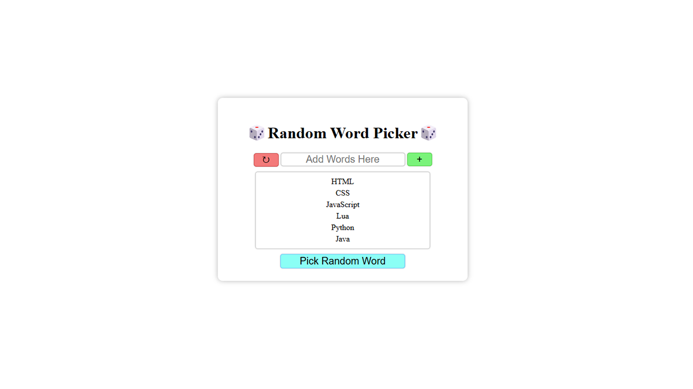

Willkommen!
Hallo, ich bin Cristian, ein Entwickler mit einer Leidenschaft für
Tools, Spiele und Websites.
Ich spezialisiere mich auf JavaScript, Python und Java. Ich liebe es,
Ideen durch Code in die Realität umzusetzen.
"Code ist nicht nur eine Fähigkeit, sondern eine Art, Probleme zu lösen, zu lernen und zu erschaffen."
Projekte
Roblox Spiel
Ein Spiel, das ich für einen YouTuber mit Lua in Roblox Studio entwickelt habe.

Zum SpielTyping Speed Test
Ein Projekt zur Verbesserung meiner Tippgeschwindigkeit und meiner JavaScript-Kenntnisse.

Zur WebsiteZufallszahlgenerator
Mein erstes Projekt für eine andere Person mit HTML, CSS und JS.

Zur WebsiteMinecraft Mods
Ich habe einige Mods für einen YouTuber und Freunde mit Java erstellt.

Zu GitHubTaschenrechner
Ein Projekt zum besseren Verständnis von JavaScript.

Zur WebsiteZufallswort-Auswahl
Ein Projekt basierend auf meinem Zufallszahlgenerator.

Zur WebsiteÜber mich
Name:
Cristian
Alter:
18
Sprachen:
Englisch, Rumänisch, Deutsch, Russisch
Persönliche Eigenschaften:
Problemlösung, autodidaktisches Lernen, Kreativität, Teamarbeit
Programmiersprachen:
Java, Lua, Python, JavaScript, HTML/CSS
Projekte & Erfahrung:
Hallo, ich bin Cristian. Ich bin ein leidenschaftlicher Entwickler mit solider Grundlage in der Programmierung und einer Liebe zum kreativen Problemlösen.
Ich entdeckte das Programmieren mit 15, als ich begann, meine Hausaufgaben mit Python zu automatisieren. Was als Neugier begann, entwickelte sich schnell zu einem mächtigen Werkzeug. Ich erkannte, wie hilfreich Code im Alltag sein kann, und beschloss, tiefer einzutauchen.
Bald baute ich kleine Anwendungen zum Spaß und lernte neue Sprachen. Ich begann mit dem Modden von Minecraft, was mich dazu brachte, Java zu lernen. Einer meiner ersten Mods erregte die Aufmerksamkeit eines YouTubers, für den ich dann eigene Mods entwickelte. Diese Erfahrung weckte mein Interesse an der Spieleentwicklung und zeigte mir die kollaborative Seite der Programmierung.
Mit der Zeit experimentierte ich mit verschiedenen Technologien: Ich entwickelte Spiele in Lua, mobile Apps in Kotlin und lernte durch echte Projekte über Serververbindungen, Datenstrukturen und mehr. Ich brachte mir sogar 3D-Modellierung, UI-Design und Asset-Erstellung bei, um meine Solo-Spieleentwicklung zu unterstützen.
Nach einer Pause für die Schule kehrte ich mit neuer Entschlossenheit zur Programmierung zurück. Ich erweitere aktiv meine Kenntnisse in Webentwicklung mit HTML, CSS und JavaScript, entwickle responsive Websites und verbessere meine Full-Stack-Fähigkeiten.
Ich suche derzeit nach Möglichkeiten, mich als Entwickler weiterzuentwickeln, an spannenden Projekten mitzuwirken und in einem professionellen Umfeld weiter zu lernen.